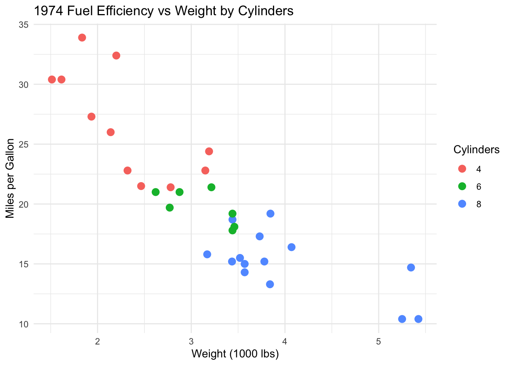
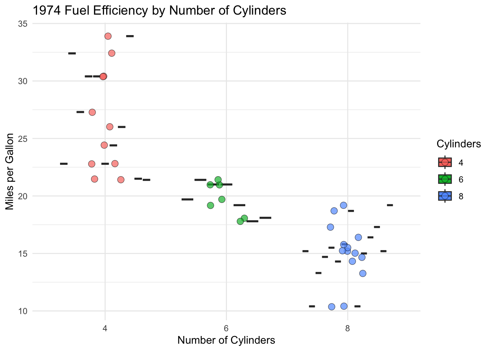

Converting ggplot2 plots into interactive Plotly visualizations
Author
Isaac Gomez Hernandez
Published
February 26, 2026
The Porsche 914-2 shown below is one of the vehicles included in the mtcars dataset.
1971 Porsche 914
Image: 1971 Porsche 914. Bob Adams from Amanzimtoti, South Africa, CC BY-SA 2.0, via Wikimedia Commons.
0.1 Loading dataset
# Creating working version of the built-in mtcars datasetmtcars_tbl <- mtcars %>%# Converting row names (car names) into an explicit column tibble::rownames_to_column(var ="car") %>%# Converting selected numeric variables into categorical factors# Showing categories rather than continuous measurementsmutate(cyl =factor(cyl), # Converting number of cylinders to factoram =factor(am,levels =c(0, 1),labels =c("Automatic", "Manual")) # Changing transmission type to labeled factor )# Showing the first few rows of the cleaned datasethead(mtcars_tbl)
The function being presented is ggplotly() from the plotly package in R.
2 What is it for?
2.1 The function has some useful interactive features such as:
Hovering over data points to see values in more detail
Being able to zoom in/out of specific areas of figures
Toggling features on/off using the legend
Saving figures as PNG files
3 Examples
3.1 Example 1
# Creating a scatterplot of fuel efficiency versus vehicle weightcarfig1 <-ggplot(mtcars_tbl,aes(x = wt, y = mpg, color = cyl)) +geom_point(size =3) +theme_minimal() +labs(title ="1974 Fuel Efficiency vs Weight by Cylinders",x ="Weight (1000 lbs)",y ="Miles per Gallon",color ="Cylinders" )# Showing the static ggplotcarfig1

# Converting the static ggplot into an interactive plotggplotly(carfig1)
3.2 Example 2
# Creating a boxplot comparing fuel efficiency by number of cylinders# Adding custom hover text for each carcarfig2 <-ggplot( mtcars_tbl,aes(x = cyl,y = mpg,fill = cyl,text =paste0( # Specifying exact hover text"Car: ", car,"<br>MPG: ", mpg,"<br>Weight: ", wt,"<br>Transmission: ", am ) )) +geom_boxplot() +geom_jitter(width =0.15, alpha =0.7, shape =21, size =3, stroke =0.3) +# Showing individual observationstheme_minimal() +labs(title ="1974 Fuel Efficiency by Number of Cylinders",x ="Number of Cylinders",y ="Miles per Gallon",fill ="Cylinders")# Showing the static boxplotcarfig2

# Converting the boxplot into an interactive plot# Displaying only the custom hover textggplotly(carfig2, tooltip ="text") # Specifying interactive feature
# Additional tooltip options include: "x", "y", "fill", and "colour"
4 Is it helpful?
4.1 Yes!
4.1.1 Community Health & Emergency Response Coordinator at Latino Network
I train Community Health Workers (CHWs) to become certified with OHA
I also do workshops with Latinx community members regarding emergency preparedness, commercial tobacco cessation, & overdose prevention
Using ggplotly() could potentially be a fun & interactive way to present data to community members & CHWs
4.1.2 Epidemiology
I would create visualizations using this function for an interactive research presentation, maybe even a digital research poster